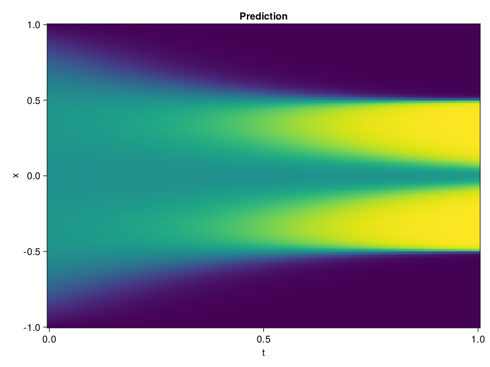

Allen-Cahn Equation with Sequential Training
In this tutorial we are going to solve the Allen-Cahn equation with periodic boundary condition from $t=0$ to $t=1$. The traning process is split into four stages, namely $t\in [0,0.25]$, $t\in [0.0,0.5]$, $t\in [0.0,0.75]$ and $t\in [0.0, 1.0]$.
using ModelingToolkit, IntervalSets
using Sophon
using Optimization, OptimizationOptimJL
@parameters t, x
@variables u(..)
Dₓ = Differential(x)
Dₓ² = Differential(x)^2
Dₜ = Differential(t)
eq = Dₜ(u(x, t)) - 0.0001 * Dₓ²(u(x, t)) + 5 * u(x,t) * (abs2(u(x,t)) - 1.0) ~ 0.0
domain = [x ∈ -1.0..1.0, t ∈ 0.0..0.25]
bcs = [u(x,0) ~ x^2 * cospi(x),
u(-1,t) ~ u(1,t)]
@named allen = PDESystem(eq, bcs, domain, [x, t], [u(x, t)])\[ \begin{align} - 0.0001 \frac{\mathrm{d}}{\mathrm{d}x} \frac{\mathrm{d}}{\mathrm{d}x} u\left( x, t \right) + 5 \left( -1 + \left|u\left( x, t \right)\right|^{2} \right) u\left( x, t \right) + \frac{\mathrm{d}}{\mathrm{d}t} u\left( x, t \right) =& 0 \end{align} \]
Then we define the neural net, the sampler, and the training strategy.
chain = FullyConnected(2, 1, tanh; hidden_dims=16, num_layers=4)
pinn = PINN(chain)
sampler = QuasiRandomSampler(500, (300, 100))
strategy = NonAdaptiveTraining(1, (50, 1))
prob = Sophon.discretize(allen, pinn, sampler, strategy)OptimizationProblem. In-place: true
u0: ComponentVector{Float64}(layer_1 = (weight = [1.397181510925293 -0.3340246379375458; 0.18573269248008728 -0.12494494765996933; … ; 1.6191047430038452 -1.5877008438110352; 1.3096874952316284 -0.12611441314220428], bias = [0.0; 0.0; … ; 0.0; 0.0;;]), layer_2 = (weight = [0.028583062812685966 0.07284259796142578 … 0.5065591931343079 -0.5731537938117981; 0.6855387687683105 0.2331654280424118 … 0.4348977506160736 0.09281352162361145; … ; 0.06868863105773926 0.6227232217788696 … 0.11471690237522125 0.6263309121131897; 0.3053082525730133 -0.33010995388031006 … 0.4994540810585022 0.2140350341796875], bias = [0.0; 0.0; … ; 0.0; 0.0;;]), layer_3 = (weight = [-0.30888277292251587 -0.48856356739997864 … 0.6151211857795715 0.03532804921269417; 0.14810432493686676 -0.2909792959690094 … 0.5737302303314209 0.5477744340896606; … ; -0.027405545115470886 0.0676775872707367 … -0.5880580544471741 -0.07454138249158859; 0.15600678324699402 -0.14897720515727997 … -0.22300179302692413 0.253022700548172], bias = [0.0; 0.0; … ; 0.0; 0.0;;]), layer_4 = (weight = [0.41185376048088074 0.6208229064941406 … -0.6047363877296448 0.1522880643606186; 0.4057473838329315 -0.39434143900871277 … -0.427133709192276 0.6257497668266296; … ; -0.2147965133190155 0.3397519886493683 … 0.6667802929878235 0.10412826389074326; -0.24003387987613678 0.6036637425422668 … -0.6912464499473572 0.14456669986248016], bias = [0.0; 0.0; … ; 0.0; 0.0;;]), layer_5 = (weight = [0.7143557071685791 -0.7182705402374268 … 0.5259771943092346 -0.46488717198371887], bias = [0.0;;]))We solve the equation sequentially in time.
function train(allen, prob, sampler, strategy)
bfgs = BFGS()
res = Optimization.solve(prob, bfgs; maxiters=2000)
for tmax in [0.5, 0.75, 1.0]
allen.domain[2] = t ∈ 0.0..tmax
data = Sophon.sample(allen, sampler)
prob = remake(prob; u0=res.u, p=data)
res = Optimization.solve(prob, bfgs; maxiters=2000)
end
return res
end
res = train(allen, prob, sampler, strategy)u: ComponentVector{Float64}(layer_1 = (weight = [1.0455723873228355 -0.5781067823722421; 1.4774584992165312 -0.6839187440207463; … ; 2.6339552142238984 -0.9744388831679441; 1.5375369602521043 -0.7625274659697012], bias = [0.3881311486048885; 0.2973296147344547; … ; -0.5313786185244936; 1.4362158894890926;;]), layer_2 = (weight = [-0.2364298123834945 0.017643879390175723 … 0.7911075675469812 -0.743536420449656; 1.0236715643314336 0.7156094067563241 … 1.2718798267243183 0.35153092304728106; … ; 0.15240711583685385 0.8580098544043802 … 0.17441476092166422 0.9746208891494458; 0.4283965314554207 -0.1406884262336241 … 0.6726035213900219 0.6545452560558812], bias = [-0.452280555535989; -0.6034838704202122; … ; -0.22717278215475567; 0.2785328499181412;;]), layer_3 = (weight = [0.24245930651123884 -0.5864255512951759 … 0.42962768641980154 -0.07493166484242719; 0.7716692029083146 -0.781190551103119 … 1.4200110385320037 0.7701333817785955; … ; -0.30645575175115375 0.28152698021036393 … -1.2030706852595674 0.15618740318005955; 0.10805004761031316 -0.39266334391081226 … -0.3297736885451646 -0.30946936179939794], bias = [0.17756410189705282; -0.4437963178572726; … ; 0.4710679690301858; -0.1751789236521054;;]), layer_4 = (weight = [0.272043724593207 1.1819783478102661 … -1.0582495473722568 -0.17804841547698494; 0.5491596461187632 -0.09216006436801771 … -0.8217129304816632 0.9657682265676074; … ; 0.005071858985230091 -0.21488921960094884 … 0.6198219122743414 -0.06411867145930687; -0.28768282189584815 0.7465496102194493 … -0.33913134181187304 -0.17342344037453214], bias = [-0.007322882976100716; 0.6281638571807812; … ; 0.014775280732498878; -0.1485814282749851;;]), layer_5 = (weight = [0.7218602617985836 -1.2454006870681524 … 0.37790640403077264 -0.12332334551520306], bias = [-0.3943770789489364;;]))Let's plot the result.
using CairoMakie
phi = pinn.phi
xs, ts = [infimum(d.domain):0.01:supremum(d.domain) for d in allen.domain]
axis = (xlabel="t", ylabel="x", title="Prediction")
u_pred = [sum(pinn.phi([x, t], res.u)) for x in xs, t in ts]
fig, ax, hm = heatmap(ts, xs, u_pred', axis=axis)